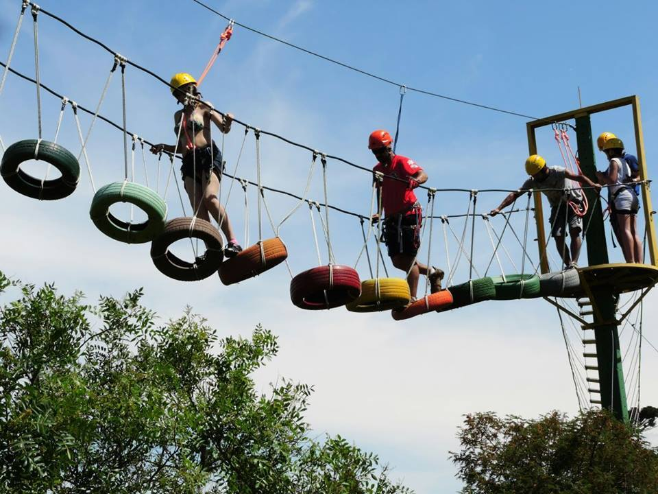
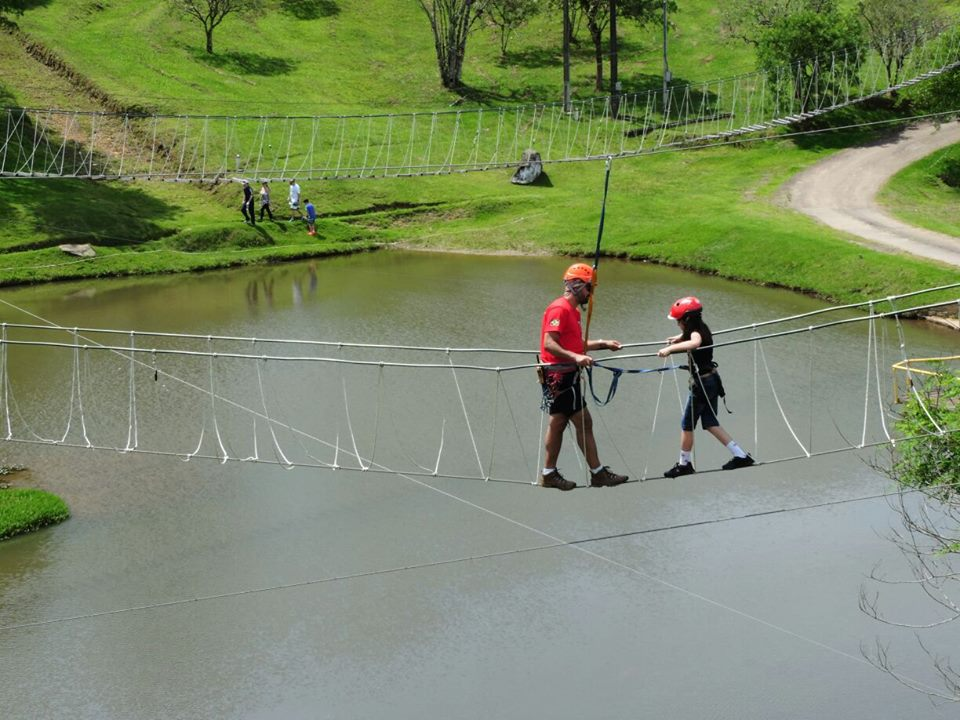
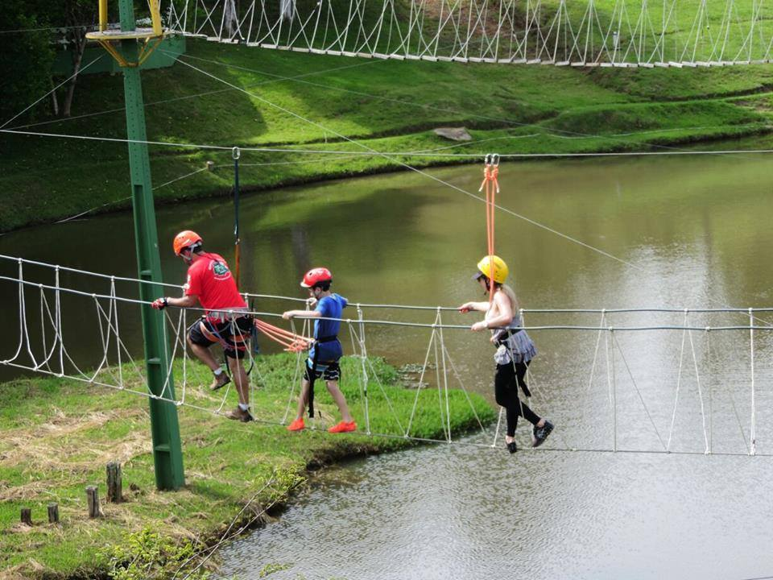
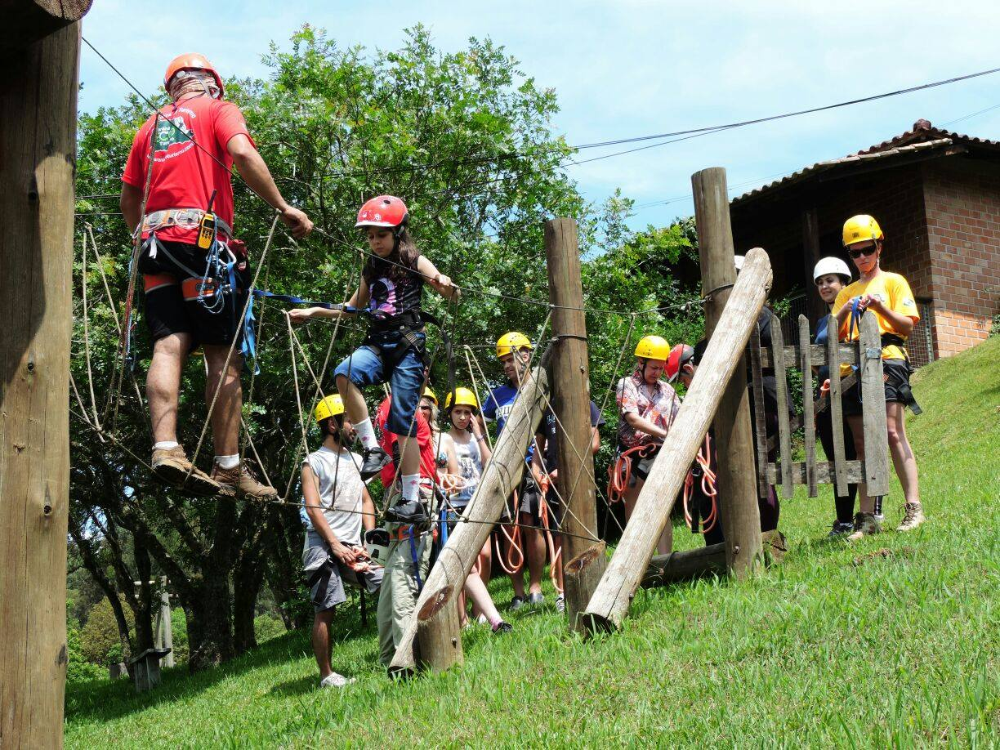
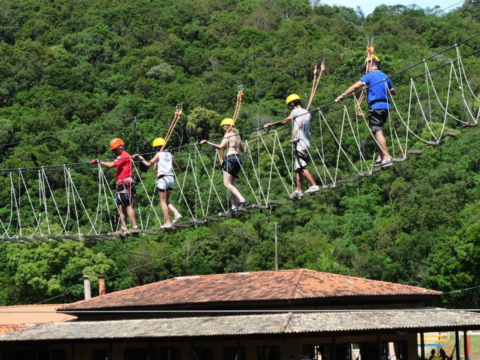

Detalhes do Roteiro
O arvorismo é uma aventura inesquecível que une diversão, esporte e natureza em um único lugar. Partindo do centro de Morretes, seguiremos até nossa base da atividade.
Essa atividade é indicada para pessoas de todas as idades e níveis de condicionamento físico, e pode ser praticada em grupos de amigos, em família ou até mesmo em eventos corporativos.
Serviços incluídos:
Transporte in/out saindo de Morretes;
Seguro atividade.
Monitores credenciados;
Equipamentos de segurança;
Ticket de acesso;
Informações adicionais:
Período de atividade: Manha ou a tarde;
Duração completa: 3 horas;
Grau de dificuldade: Classe I (leve)
Capacidade mínima: 2 pessoas
Idade: a partir de 05 anos
Dicas do que levar:
Mochila pequena para caminhada,
Tênis confortável,
Medicamento de uso pessoal,
Roupa leve para a trilha, camiseta de manga (proteção do Sol), calça, maiô e toalha;
Repelente, protetor-solar;
Dicas do que levar
- Mochila pequena para caminhada,
- Tênis confortável,
- Medicamento de uso pessoal,
- Roupa leve para a trilha, camiseta de manga (proteção do Sol), calça, maiô e toalha;
- Repelente, protetor-solar;
Informações importantes
- Período de atividade: Manha ou a tarde;
- Duração completa: 3 horas;
- Grau de dificuldade: Classe I (leve)
- Capacidade mínima: 2 pessoas
- Idade: a partir de 05 anos
Tarifas
| N° de pessoas | Guia bilíngue | Adulto | Criança |
|---|---|---|---|
| 2 a15 | Não | R$ 150.00 | R$ 150.00 |
| 2 a 15 | Sim | R$ 250.00 | R$ 250.00 |
Galeria de Fotos




